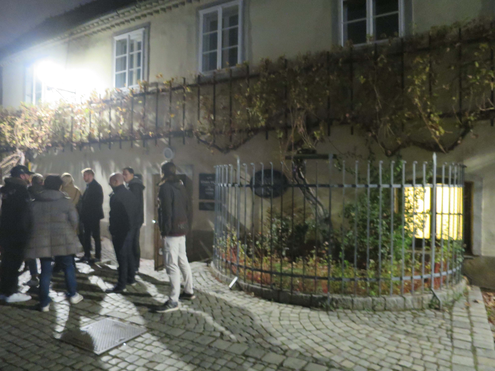

海外の会議に参加するのは大変
投稿｜2022年11月27日 更新｜
BIOMA2022国際会議（11/17～18）に出席しました．
"BIOMA"というのは，Bioinspired Optimization Methods and Their Applicationsの略で，
主に生物の生態に着想を得た最適化手法とその適用に関する研究の国際会議です（図1）．

図1．BIOMAの会場
この国際会議を知ったのは，わたしの博士論文の副査を務めてくださった先生からご紹介いただいたのがきっかけでした． ちょうどわたしの博士論文の内容の一部が，人（という生物）の歩行軌跡が重畳し， “性能の良い”ネットワークに適合するように自己組織化していく様子を模したシミュレーションに関するものだったということと， 生態現象にみられる自己組織化や進化・適応的な振る舞いに個人的に興味があったため，投稿を決め，査読にも通り，参加の運びとなった次第です． 採録された論文はこちらになります（→DOI: 10.1080/13467581.2022.2047056）．
海外で行われる国際会議に参加するのは初めてのことで，すごく苦労しました...
第一線の研究者の方々は世界を飛び回っている印象がありますが，それだけで感服します．
まず，遠いうえにお金がたくさんかかる．
会議はヨーロッパのスロベニア，マリボルというところで行われたのですが，家を出てから向こうの宿に着くまで30時間くらいかかりました． 行くだけでものすごく体力を使いましたし，時差ボケで夜中に起きたり日中頭が痛かったりで散々でした．マリボルが日本から行きにくかったにしろ， ヨーロッパやアメリカに行こうと思えば似たような時間がかかるのではないかと思います．
加えて，今回の会議にかかった費用は，諸々含めて75万円くらいになるかと思います．これを自分の懐から捻出するのは正直厳しい． 自分の研究は在野でやっていこうかしら，海外の会議にも積極的に参加していきたいな，と考えていたわたしの野望が頓挫してしまいました． そもそも研究の発表に大きなお金がいるというところに，プロの研究者にとって研究資金の獲得の大事さがあるのだと再認識しました．
時間距離と金銭距離の問題に悩まされている最中，「日本ってグローバルに活動領域を広げるうえでかなり不利な位置にないか？」という気になってきました． 日本の外に出たかったら海を越えることは必須ですし，昨今の燃料費の高騰，円安のように，国際情勢で渡航費は簡単に跳ね上がりますし． それに対して，例えばヨーロッパ圏内だったら飛行機だけでなく鉄道やバスなどの陸路も選択できるし，自分の懐事情と時間とを天秤にかけることができます． 一方，アメリカはカナダとメキシコ以外とは国境を接していないですし，長距離の移動手段は飛行機が主でしょうに，なぜグローバル化しているような印象があるのでしょうか？ いろんな国から人が集まるグローバル化の“中心”だからでしょうか？動かずしてグローバル化が達成できるなんてうらやましい． そういった意味では中国は両面的ということでしょうか？中国からもたくさんの学生が海外に留学しますし，中国へも優秀な学生や研究者が海外から迎えられていると聞きます． ところで，グローバル化するといいことってなんでしたっけ？わたしの中でグローバル化することが目的になっているような気が...
少し話が逸れました．次は発表の場の選び方の問題です．
今回参加したBIOMAは，生態の進化的振る舞いを模した最適化手法とその適用がスコープなのですが，参加してみて気づいたのは，実際のスコープはより狭く， メタヒューリスティクスとその性能に関心が高い学会だったということです．ヒューリスティクスというのは，最適化が難しい目的関数に対して良好な近似解が得られると経験的にわかっているような手法のことです． そして，メタヒューリスティクスというのは，目的関数や入力変数の形に依存せずに汎用的に適用できるヒューリスティクスのことです．焼きなまし法や遺伝的アルゴリズムが有名ですね． メタヒューリスティクスは，汎用的であるがゆえに性能の比較に難しさがあり，作法を間違えると誤った優劣を帰結することがあります．この点に対する問題意識から， 今回の会議のもっぱらの関心は「どのようにメタヒューリスティクス同士の性能を“フェアに”，“透明性を持って”比較できるか」というところにありました． 一方で，わたしの研究発表の内容は，「人の歩行軌跡が重畳する様子を模してネットワークを出力する」手法と「ネットワーク上の移動費用とネットワークの構築費用を最小化する2目的最適化」問題が1対1対応するヒューリスティクスに関するものであり， 厳密解法や他の近似解法がないために，提案手法の優劣を評価するベンチマークがありませんでした．そのため，上述の関心から大きく外れていました． さらに悪いことに，建築学や都市計画学的な視点からの議論を展開してしまいました．そのためか，発表終了後， 大勢を占める純粋なコンピュータ・サイエンス畑出身の参加者たちの顔がポカーンとしているのを演台から眺めるという恥ずかしい思いをしてしまいました（トラウマになりそうです）． 手法の性能というよりも生態の“賢さ”を面白がる会議だと思っていたのですが，想像以上にコンピュータ・サイエンスのど真ん中で，それに適した発表内容にできなかった，そもそも発表内容にもっとフィットした会議に出すべきだったと反省しています． オーディエンスや読者が誰かを意識することの大切さに対する認識を新たにしました．
ただ，個人的には自分の専門領域だけに傾倒していくことには気を付けたいと思っています．今回BIOMAに参加したのも，建築学や都市計画学に関する研究発表の場にいるだけでは自分の研究の裾野が広がらないのではないか， 発表していて気持ちが良くなる場に引っ張られて，最急降下法的に立ち位置を定めていくと“ローカルな最適解”に陥ってしまって，“グローバルな最適解”を見逃してしまう恐れがあるのではないかと思ったからでした． しかしながら，自分の研究・興味関心の学会・ジャーナルに対する適応度の地形が不明であるため，ときに勇気をもって専門外の場を探索をする必要があります． 探索は往々にして，ローカルな最適解よりも良い解を見つけることに失敗しますが，繰り返せば繰り返すほどグローバルな最適解を見つける公算が高くなります． こう考えると，今回BIOMAに参加したことは失敗だったかもしれないけれども，必要な探索の過程であり，恥をかいたことは無駄ではなかったと自分を慰めることができます． それに，メタヒューリスティクスを専門にするコンピュータ・サイエンティストの作法を知れたことは，確実に学びになっており， 今後の研究でなんらかの手法の性能を論じるときの指針になるはずです．
以上，海外の会議への参加の報告と苦労したことの共有でした． 数十万円ポンと出るほど懐は温かくないので，そう易々と国際会議に出席は出来ないかもしれませんが，チャンスがあればまたチャレンジしたいと思います．
そうそう．スロベニアのマリボルについて，とても小さい町で半日もあれば街一帯を回れるかと思いますし，世界一古いワインのブドウの木（Stara Trta）があるThe Old Vine House（図2）があって， そこのシャルドネはとてもおいしい（おススメはリースリングらしいですが少しクセが強い）ので，お近くに行かれることがあればぜひお立ち寄りください．

図2．世界一古いワインのブドウの木（Stara Trta）とThe Old Vine House